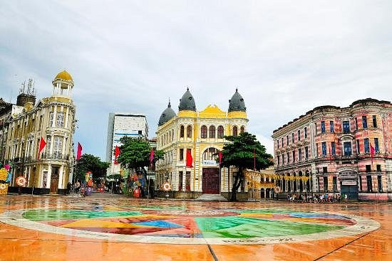

Sobre o Marco Zero
Localizado no Bairro do Recife, o Marco Zero é um dos locais mais visitados da cidade.
O espaço é famoso por sua rosa dos ventos, obra do artista Cícero Dias, e por ser o ponto inicial das medições rodoviárias de Pernambuco.
Atrações no Marco Zero
- Passeios de catamarã pelo Rio Capibaribe.
- Armazéns do Porto com opções gastronômicas.
- Vista para o Parque das Esculturas de Francisco Brennand.
Outros pontos turísticos
Descubra mais atrações no Recife Antigo visitando a nossa página sobre outros pontos turísticos.